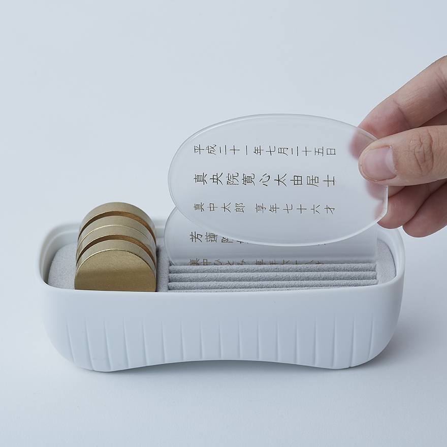
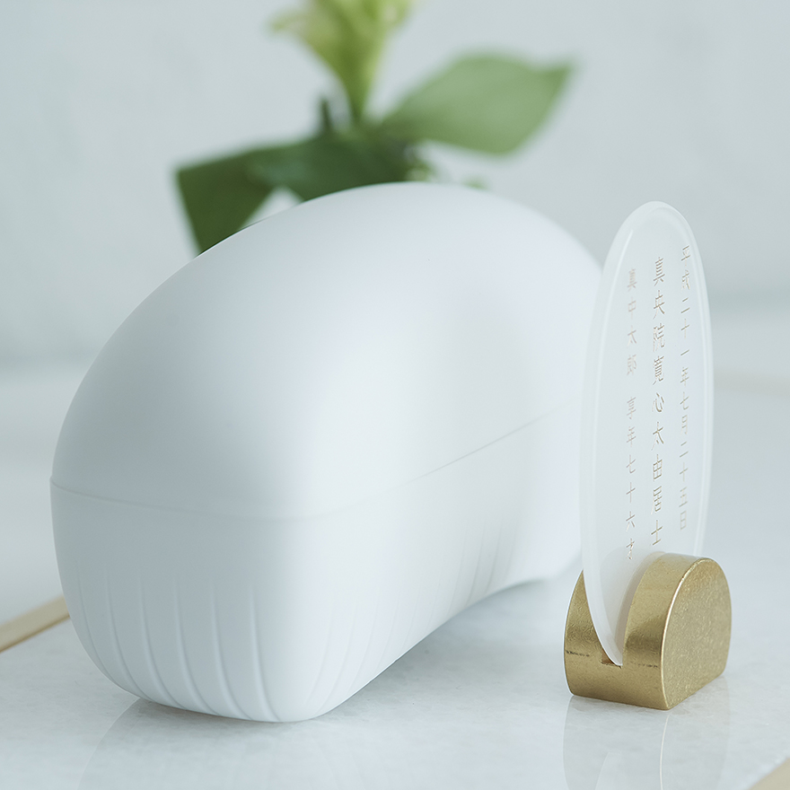
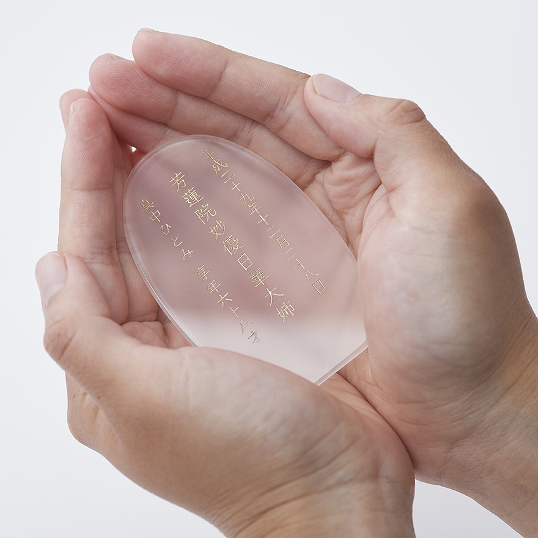
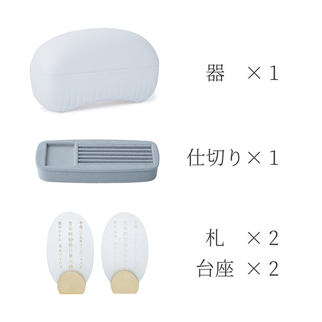

Do
間、個人化への導線
暮らしに間を置く道具を知り、買える場所へ行く。

商品説明
家族が集う新しい繰出し位牌
それは、旅立った家族をやさしく包み込む、繭玉を象った小さなお家。蓋を開ければ、家族みんなのお位牌が仲良く並びます。その様子はまるで、川の字になって眠る、あたたかな家族の風景のよう。
「みんながここにいる」。祈るたび、家族のつながりを感じることのできるお位牌『家景牌』。家族が最後に還り、集う場所。そこには、ずっとずっと続いていく家族の時間があります。

最大5枚の位牌札が
すっきり収まる繰出位牌
「家族で一緒に眠る場所」をテーマにした『家景牌』は、繭玉型の器の中に専用位牌札を最大5枚まで収めることができる、家族のための繰出位牌です。位牌札は丸みを帯びた形が愛おしく、抱きしめたくなるような佇まい。器の中には札が一枚ずつぴったり収まるスエードの仕切りを設けています。
祈りの時には位牌立てに偲びたい方の札を並べ、普段の時は器の中に仕舞って。限られたスペースでも、家族それぞれを大切に祀り、想いを馳せることができます。

神聖な美しさを持つ、
白磁でできた繭玉の家
家族が安心して眠れる繭玉の家。素材は、古くから日本の家に用いられてきた「土」から生まれる陶磁器がいい。そして同時に、祈りの対象として、神聖で最も美しい「白」を表現したい。そんな想いを託したのは、エッグシェルをはじめ巧みな白の表現で白磁の器をつくる有田焼の窯元・やま平窯。焼成によって収縮し、歪みやへたりが起きやすい陶磁器という素材で、繭玉のような繊細な曲線を実現するには多くの困難がありました。しかし、一つの繭玉を焼成後に上下2つに分割するなど、熟練職人の知恵と技術が結集し、理想の形に仕上がりました。

伝統工芸士の技が活きる
水晶の位牌札
水晶の位牌札は、古くから水晶や宝石の加工が盛んな山梨・詫間宝石彫刻の伝統工芸士、1級宝石研磨士による手仕事。片面はつや消しのフロスト加工、もう一方は鏡面に。それにより、淡雪のような透き通った繊細な白の表情に仕上がっています。また、故人のシンボルである水晶位牌を傷つけることがないよう、一つひとつ手作業で磨いた真鍮台座や、器に仕舞っている間、心地よく眠っていただくための上質なスエードの仕切り台など、どのパーツにも日本の職人の貴重な技術が用いられています。

商品仕様
サイズ
器:幅13.9cm×奥行6.1cm×高さ8.2cm
札:幅5cm×奥行0.3cm×高さ8cm
台座:幅3cm×奥行1.9cm×高さ2.4cm
台座＋札:幅5cm×奥行1.9cm×高さ8.7cm
仕上げ
札:表面ツヤ・裏面マット仕上げ
台座:光沢バレル加工
素材
器:陶磁器
札:水晶
台座:真鍮
仕切り:スエード
生産地
器:佐賀県西松浦郡
札:山梨県甲府市
台座:東京都葛飾区
仕切り:大阪府大阪市
デザイナー
まなか開発チーム
備考
器の他に、札2枚、台座2台が商品内容に含まれます。
※最大5枚まで収納可能です。
追加用の札は別売りでご用意がございますので、ご要望がございましたら、お問い合わせください。